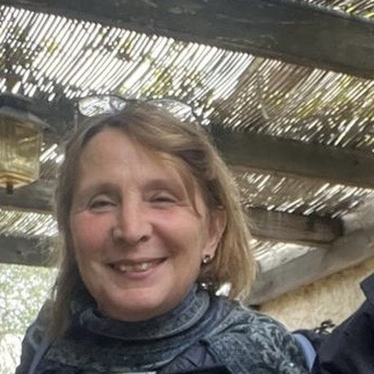
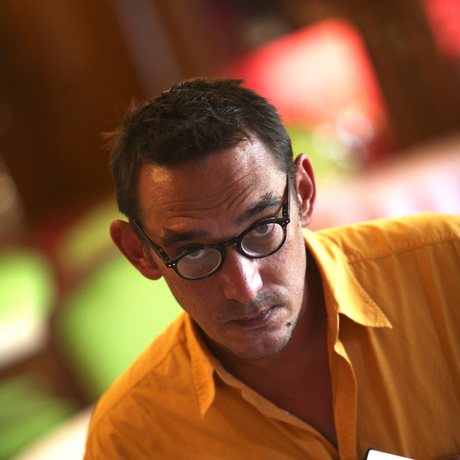
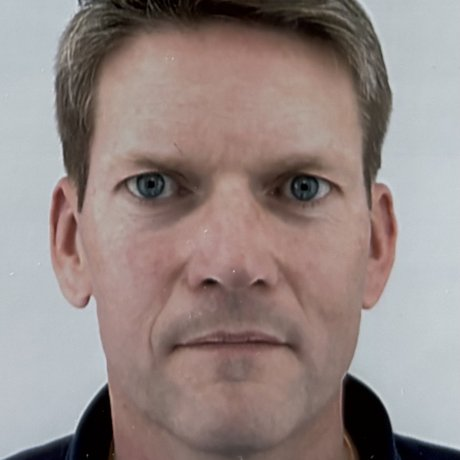
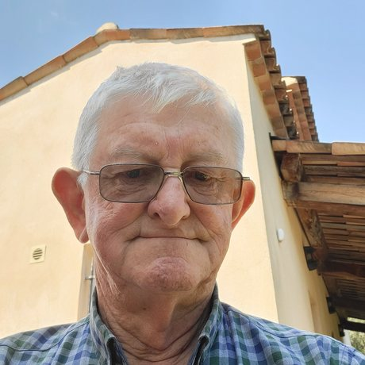
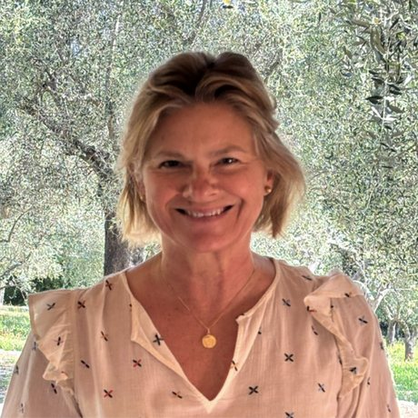
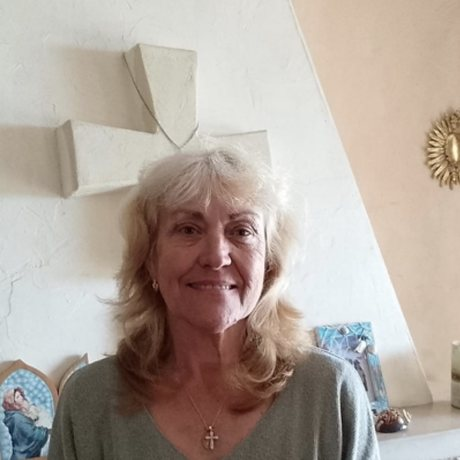
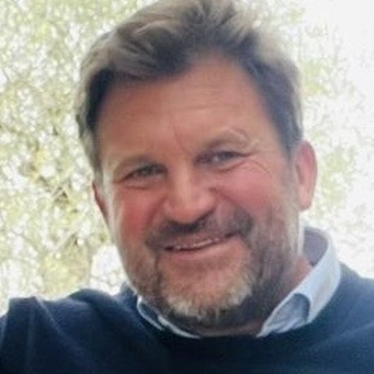

Une équipe au service de la mission.
Le projet est porté par la Paroisse Saint-Arnoux et l'Association Diocésaine de Nice, accompagnées d'une équipe d'experts structurée et bénévole.
Père Paul Bao Dinh LY
« Nous ne bâtissons pas seulement des murs. Nous bâtissons un lieu vivant. »
Pilote principal du projet et maître d'ouvrage en tant que représentant du Diocèse de Nice, le Père Bao Dinh LY est le garant de la vision pastorale et de la relation avec l'évêché. Porté par une vision stratégique large — à l'échelle de la paroisse comme du diocèse — il défend les décisions du projet et conduit la communauté avec une volonté résolue de le mener à bien.
Plus de 100 bénévoles sont engagés autour du projet, avec une exigence partagée : maîtrise des coûts et des risques, sécurité, pérennité constructive et infrastructures.

Anne-Marie FloréanVoir ›
Daniel HauserVoir ›
Jérôme IvanezVoir ›
Kevin GalliganVoir ›
Eugénie CabotVoir ›
Nelly GaucheVoir ›
Xavier ManuelVoir ›« Là où deux ou trois sont réunis en mon nom, je suis au milieu d'eux » — Mt 18, 20